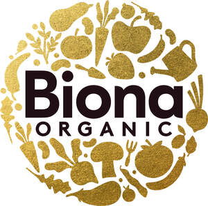

Trade Mark Journal No.2025/037 12 September 2025
UK00004257365 1 September 2025 (29,30,32)

- Class 29
- Edible oils and fats; milk products; dairy products; dairy substitutes; canned beans; butter; margarines and spreads; nut butters; jellies; jams; compotes; fruit and vegetable spreads; canned tomatoes; pickled vegetables; olives; tofu; creamed coconut; tomato concentrate; bouillons; prepared soups; soups and stocks; processed fruits; fungi, vegetables, nuts; prepared meals; convenience foods; tahini; vegetarian sausages and burgers; hummus; potato crisps; peanut butter; pates and spreads; yogurts; snack bars; savoury snacks; coconut milk; edible seeds; pulses; canned vegetables; canned fruits; fruit in jars; vegetables in jars; cheese; cheese containing herbs; dried fruits; all of the aforesaid goods being organic and all of the above exclusively for human consumption.
- Class 30
- Coffee; cocoa; tea; rice; artificial coffee; flour and preparations made from cereals; bread; cereals; breakfast cereals; porridge; grits; pastries; tarts; cookies; baked goods; confectionery; chocolate; desserts; honey; yeast; mustard; vinegar; sauces; relishes; dried herbs; herb salt; boiled sweets; sweets (candy); cereal food bars; chocolate bars; savoury sauces; chutneys; pastes; processed grains; starches; baking preparations; yeasts; dried and fresh pastas; noodles; dumplings; herb teas; crispbread; flapjacks; mayonnaise; pasta; pizza bases; pretzels; rice cakes; pasta sauces; ketchup; marinades; marzipan; muesli bars; peppermint sweets; salts; seasonings; flavourings; natural sweeteners; sweet coatings and fillings; bee products; edible decorations; syrups and treacles; pesto sauce; cakes; cereal based snacks; curry sauces; salad dressings; muesli; candy bars; chewing gum; puffed rice; waffles; sugar; condiments; all of the aforesaid goods being organic and all of the above exclusively for human consumption.
- Class 32
- Beers; bottled waters; vegetable juices; fruit juices; juices; non-alcoholic preparations for making beverages; malt based preparations for making beverages; all of the aforesaid goods being organic and all of the above exclusively for human consumption.
Windmill Organics Limited
Representative: Russell-Cooke LLP